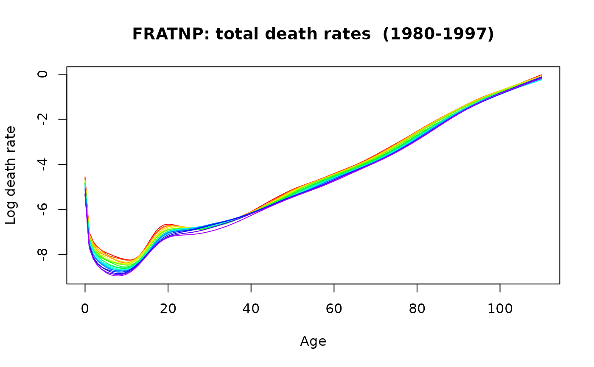
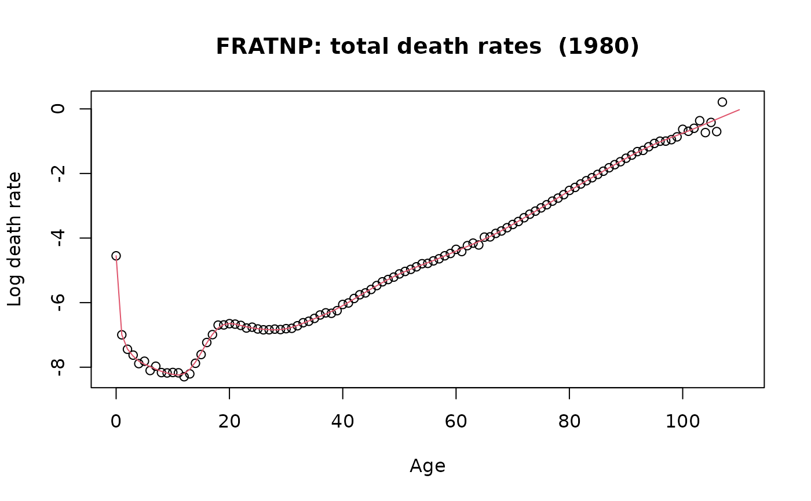

Smooth demogdata data using one of four methods depending on the value of method
Usage
smooth.demogdata(
data,
method = switch(data$type, mortality = "mspline", fertility = "cspline", migration =
"loess"),
age.grid,
power = switch(data$type, mortality = 0.4, fertility = 1, migration = 1),
b = 65,
k = 30,
span = 0.2,
lambda = 1e-10,
interpolate = FALSE,
weight = data$type != "migration",
obs.var = "empirical"
)Arguments
- data
Demogdata object such as created using
read.demogdata.- method
Method of smoothing. Possibilities:
"mspline"(monotonic regression splines),"cspline"(concave regression splines),"spline"(unconstrained regression splines),"loess"(local quadratic usingloess).- age.grid
Ages to use for smoothed curves. Default is single years over a slightly greater range than the unsmoothed data.
- power
Power transformation for age variable before smoothing. Default is 0.4 for mortality data and 1 (no transformation) for fertility or migration data.
- b
Lower age for monotonicity if
method=="mspline". Above this, the smooth curve is assumed to be monotonically increasing.- k
Number of knots to use for penalized regression spline estimate. Ignored if
method=="loess".- span
Span for loess smooth if
method=="loess".- lambda
Penalty for constrained regression spline if
method=="cspline".- interpolate
If
interpolate==TRUE, a linear interpolation is used instead of smoothing.- weight
If TRUE, uses weighted smoothing.
- obs.var
Method for computing observational variance. Possible values: “empirical” or “theoretical”.
Value
Demogdata object identical to data except all
rate matrices are replaced with smooth versions and pop matrices are replaced with disaggregated population estimates obtained
using monotonic spline interpolation applied to the cumulative population data.
Weight
matrices are also added to the object showing the inverse
variances of the estimated smooth curves.
Details
The value of method determines the type of smoothing used.
- method="mspline"
Weighted penalized regression splines with a monotonicity constraint. The curves are monotonically increasing for age greater than b. Smoothness controlled by
k. Methodology based on Wood (1994). Code callsgamfor the basic computations.- method="cspline"
Weighted regression B-splines with a concavity constraint. Smoothness controlled by
lambda. Methodology based on He and Ng (1999). Code callscobsfor the basic computations.- method="spline"
Unconstrained weighted penalized regression splines. Equivalent to "mspline" but with
b=Inf.- method="loess"
Weighted locally quadratic regression. Smoothness controlled by span. Code calls
loessfor the basic computations.
Examples
france.sm <- smooth.demogdata(extract.years(fr.mort, 1980:1997))
plot(france.sm)

plot(fr.mort, years = 1980, type = "p", pch = 1)
lines(france.sm, years = 1980, col = 2)
